2026-10-24 · 当前本地构建 index-L0xOqOMh.js / index-oV8a99Z0.css · 本轮实际截图与只读代码检查
入库之间：全量检查分析
当前已有可体验的教学闭环。下一轮应优先修正复盘判断、看镜视角的衔接与各模式的观察指令，再提高镜内参照和驾驶舱的真实感。
检查范围与步骤
| 步骤 | 实际检查 | 健康情况 | 本轮证据 |
|---|---|---|---|
| 1 | 现有驾驶页、重新进入、首页入口 | 入口清晰；预览服务原先停止，恢复后可以重新进入 | 01、02 |
| 2 | 六步新手：定位→认镜→右打→保持→两镜确认→主动回正 | 完整手动走通；观察是否理解仍靠用户点击确认 | 03—07 |
| 3 | 右侧回正短练：真实语音→慢放→接手 | 流程可用；示范和接手会重置正前视角 | 08、09 |
| 4 | 提前回正→四张镜面对比→从出错前重练 | 本次正确识别偏早，重练清除旧输入；特定回轮过程存在代码复现误判 | 10、复现脚本 |
| 5 | 完整语音示范前几段→动态接手→自己倒车→暂停→轨迹复盘 | 实际走通；记录不足时没有编造此前转向动作 | 12、13 |
| 6 | 座椅调高、双镜推荐、撤销、恢复原眼位 | 功能可用；完成推荐后缺少双镜效果验收 | 14 |
| 7 | 保留的原分步示范，第 3 / 12 步 | 仍可访问；旧文字要求寻找此时镜里看不到的后轮、库角 | 16 |
| 8 | 跟车外观、驾驶位、1280×1000 与 390×844 视口、键盘 | 没有出现横向溢出；小字、密集控件及 Space 按钮操作需要修正 | 11、15，DOM 尺寸与键盘实测 |
| 9 | 自动测试、语音包、控制台、渲染与记录代码 | 178/178，通过语音校验，已检查页面控制台无 error / warn；静止页面仍反复渲染两镜 | tests.txt、代码行引用 |
需要优先修正的四项
P1 · 01 特定回轮过程，复盘会把不安全的直倒姿态判为合适
复盘从“开始回正前”的姿态，重新模拟一次假设持续倒车的回轮过程。实际操作如果是停住后原地回正，或回轮时调整低速设定，预测过程可能与已录下的实际过程不同。review.js:98 调用的 judgeCenter 没有采用实际回正完成姿态；main.js:200 也没有记录当时的刹车、车速设定等输入。
| 只读复现 | 实际完成后的状态 | 当前复盘结论 |
|---|---|---|
| 示范第 1495 帧停车接手，仅按 X 原地回正 | 移动 0 m，残余夹角 3.104°；模型继续直倒约 3.379 m 触线 | good / safe，预测残余 2.966° |
| 示范第 1484 帧，以 2.5 km/h 倒车时按 X，并将低速设定改为允许的 1.2 km/h | 残余夹角 3.478°；模型继续直倒约 2.878 m 触线 | good / safe，预测残余 2.914° |
这些数值只描述本模型的复现，不是实车角度阈值或考试判罚。问题也不代表所有复盘均错误。建议分开评价开始回轮的时机、实际回轮过程，以及完成后的车身姿态和边线余量；依据真实记录解释偏差原因。
代码：review.js:31—37、98，steering-coach.js:9、54—60，main.js:200。最小复现脚本 · 本轮实际运行输出。
P1 · 02 右倒库示范、接手、重练会把视线转离右镜
实际先看右镜，再点击“准备好了，我来判断”，画面恢复正前方，只见方向盘和一侧左镜。学员需要重新找右镜，观察上下文被打断。main.js:269、288、305 的三个入口均显式设置 setGaze('forward')。新实体镜替代常驻双镜后，这个旧默认值的影响更大。
建议：示范初次带到入库侧镜；自己判断和重练保留上一观察方向，并用轻量提示提醒交替确认另一侧。保留用户主动转头，避免示范或接手时无说明地改视角。
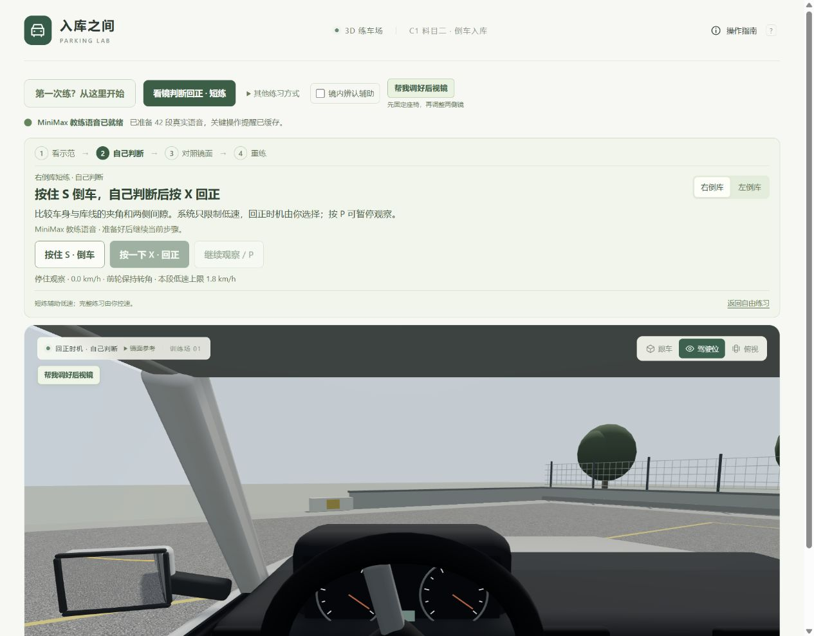
P1 · 03 不同模式的观察指导尚未统一
六步新手已经明确“库线还没进入镜子，看不到正常”；原分步示范第 3 步却仍要求看后轮、库角和边线。此时的实体镜主要是路面，车内提示也写着“建立车身与库角的对应”。旧文字没有随当前镜域和遮挡更新，可能让用户再次怀疑自己看错。
建议将所有模式共用同一份“当前能看到什么、当前该看什么、下一步做什么”的指导数据。只有参照进入实际可见范围后，才要求学员找它；后轮不可见时改用车身边缘、库线和间隙，不强求看轮胎。
代码：lesson.js:8—9，LESSON_STEPS 转向说明；与 main.js:535—579、683—690 的可见性指导对照。
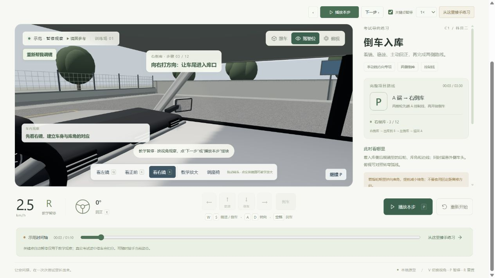
P1 · 04 一键调镜的几何合格，尚未转化成容易辨认的画面
本轮认镜和接近平行的截图中，车身往往只是镜内侧很细的暗边；灰色路面和车身阴影占据大部分画面。标注写“车身”可以帮助定位，却不足以让新手建立车身轮廓、库线夹角与两侧间隙的空间关系。
mirror-fit.js:14—24、69—81 优化的是少量参考点的几何投影，不是最终图像的车身占比、对比度和可读性。默认眼位推荐后，两侧 body 参考点距内侧边约 7.55% / 6.58%，这些数值不是渲染画面中的车身像素比例。mirror-optics.js:50—57 也明确使用单虚拟视点近似非中心凸面反射，近距离车身可能有视差。
建议：先校正真实车身侧面、车门内饰和光照，使镜内车身轮廓可辨；完成推荐后显示两镜验收，要求确认车身、侧后地面及所需库线。尺寸放大继续作为教学辅助，不能为“更好看”扩大镜域或移动参照。车型、座椅和镜片仍需实测对照。
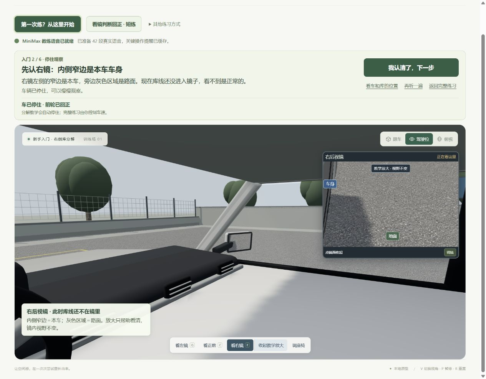
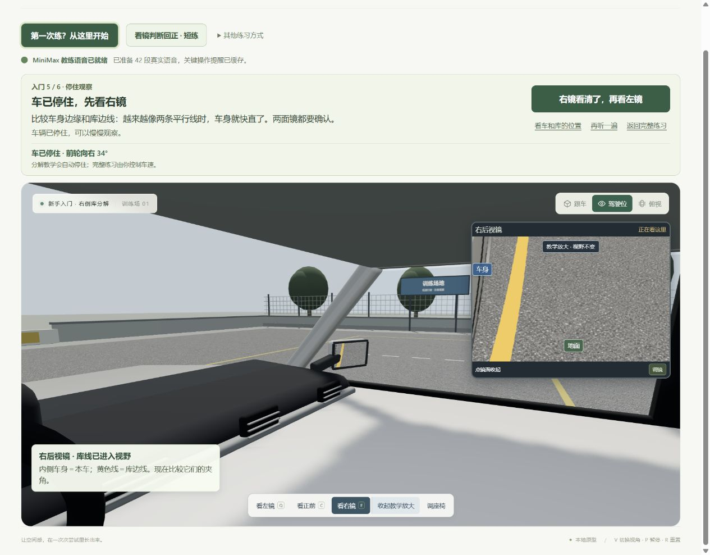
随后应做的体验与真实感优化
| 优先级 | 问题与影响 | 建议及验收方式 |
|---|---|---|
| P2 · 05 | 新手以“我认清了”“两边看过了”通过观察步骤；可以一路点过而没有判断。四图复盘信息正确时，重点仍不够突出。 | 增加一次真实辨认：点出车身或库线、选择夹角在变大还是变小。复盘先放大一面关键镜，标出本次与示范的一个主要差别，再展开双镜与轨迹。 |
| P2 · 06 | 异常时大部分指导是停住并重练。用户能知道错了，却未学习如何观察偏左、偏右、夹角与余量，以及什么情况还有修正空间。steering-coach.js:85—91。 | 增加受控的纠偏短练：偏差→先看哪面镜→判断能否继续→小幅调整→再次确认。依据车辆预测和余量给出有限纠偏，不能无条件教“向窄的一侧打”之类口诀。 |
| P2 · 07 | 驾驶舱仍有大块裸白平面、简化窗框、缺少内饰接缝与材质层次；外部车辆和树木的轮廓仍明显由基础几何组成。仪表指针固定，见vehicle-visuals.js:43—57、116—118、145。 | 选定一个具体教练车型，用同一套内外结构校核眼点、窗框、后视镜和车身。优先做内饰包覆、车门结构、镜壳和仪表反馈；再做塑料、布料、橡胶的材质与自然光照。场地增加适度磨损、接缝和周边背景，同时保持标线清楚。 |
| P2 · 08 | 新手、短练、车内训练、分步示范、语音示范与带练等入口重叠；从“返回自由练习”实际进入的是车内训练。部分页面同时有顶部、场景、底部多处暂停与调镜入口。 | 主流程统一为“看示范→自己判断→看差别→再练一次”，其他模式保留在更多选项。始终显示当前由谁驾驶、当前任务和一个主要按钮；回正、刹车、观察控制保持固定位置。 |
| P2 · 09 | C1 当前仍是方向专项：S/W 代替换挡与半联动，X 自动回中；停稳、换挡、离合及熄火未模拟。短练起点取自同一条示范姿态，容易记住固定过程。 | 先增加起点距离、车身初始夹角和轻微偏移的分级变化，检查学员是否仍会看镜判断；之后再单独增加 C1 踏板与换挡模块。教学辅助、方向专项与完整考试模拟应标清范围。 |
| P2 · 10 | 键盘 Space 被全局驾驶快捷键拦截。实测聚焦“继续语音带练”时 Space 无效，Enter 可触发。main.js:1447—1455、1492。 | 驾驶快捷键仅在驾驶区域或明确启用时生效；表单、按钮、链接及组合键保留原生行为。增加键盘走完主流程的浏览器验证。 |
| P2 · 11 | 390×844 下没有横向溢出，但看镜按钮约 42×31 px、10 px 字，调座椅字实际降到 8 px。用户一边控制一边观察时阅读成本高。截图不能证明完整无障碍。 | 练习控制使用更大触点和文字；状态不只靠低对比颜色。把看镜、回正、刹车安排在触手可及的固定区域，支持横屏驾驶布局。另测屏幕阅读器、缩放与真实触屏。 |
| P2 · 12 | 欢迎页、暂停和俯视仍持续 RAF，每帧都渲染两侧至少 512×324 的离屏镜面，再渲染主世界。main.js:1763—1765、1812—1815，mirrors.js:157—168。 | 静止画面按变化重绘，移动时按可见镜面与质量档位更新；远处设施使用合批/实例。只确认存在冗余渲染，未测具体 FPS、耗电或所有设备表现。 |
| P2 · 13 | 本轮开始时预览服务已经停止，已加载页面仍能操作，新开页面连接失败；另一旧标签页将语音错误直接显示为英文 Failed to fetch。练习记录主要保存在内存，只有座椅/镜设置有 localStorage 恢复。 | 增加稳定的一键启动、连接状态自检和明确的中文恢复提示；按用户选择保存练习进度、最近错误与设置版本，让中断后能继续。开发预览服务停止不等同于已证明产品运行时崩溃。 |
建议实施顺序与可核验的完成条件
- 先修判断与指导一致性：原地回轮、刹车回轮、变速回轮及左右两侧都用实际记录判断；任何模式不要求寻找不可见参照。为已发现两个误判增加回归用例。
- 再完成镜面训练闭环：固定眼位→双镜验收→示范→接手保留观察方向→独立判断→同设置对比→保留错误原因重练。让首次使用者无需额外解释就能指出车身、库线和差异。
- 然后重做车型细节与操作体感：按一个实际车型校核车舱，调整材质和场地细节，连接仪表与实际状态；逐步减少快捷回正和自动控速的依赖。
- 并行处理运行与可访问性：修 Space、字体与触点，暂停状态停止无效渲染，支持进度恢复与一键启动。
本轮有效基础与验证边界
六步入门、右短练、提前回正四图对比、出错前重练、语音示范接手和轨迹复盘都实际操作通过。轨迹复盘能区分“未记录打方向起点”与“还未记录回正”，这应保留。实体镜与放大使用同一反射纹理/UV；本轮没有证据表明应再次扩大镜域或额外翻转画面。
npm test：178/178；speech:verify：42 段、6,322,248 字节、390.64 秒；本轮完成的浏览器流程控制台 error / warn 为空。这些结果不能替代教学有效性、车型实测或完整可访问性验证。
当前默认/推荐工程镜域计算约为左侧横向 26.3°、右侧 22.7°；它们是代码参数的结果，非实测校准结论。单虚拟视点拟合的最大采样射线原点偏差约 13—20 mm，也不能直接当作屏幕误差或真实镜片精度。
考试标准状态本轮在全国标准信息公共服务平台复核：GA 1026—2022 标为现行；GA 1029—2022 的检索登记标为现行。标准状态及考试依据，不构成眼位、车型点位或训练效果认证。
本轮未人工驾驶完整两侧考试路线、未穷举全部 21 段完整语音示范、未做左侧全部错误分支、网络故障注入、浏览器差异、踏板/方向盘设备、长时功耗或真人学员验证。未执行实车镜片和眼位测量。当前结论是跨模块审查，不能称为所有状态、全部设备与实车训练均验收。
本轮其余截图与步骤注释
步骤 1—2：首页、定位、左镜和入门完成
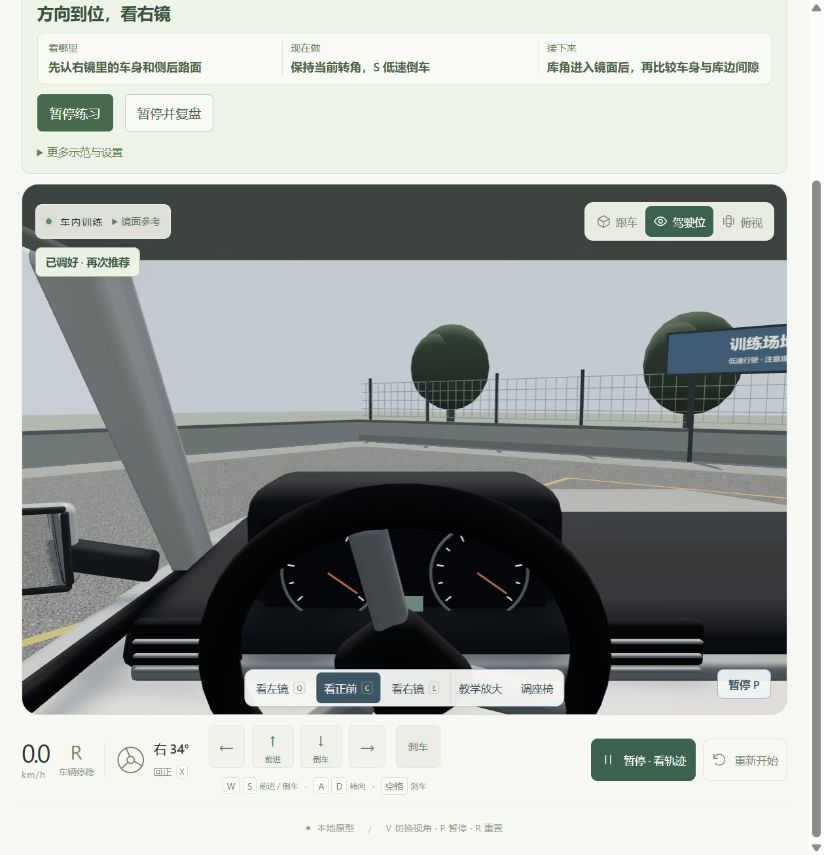
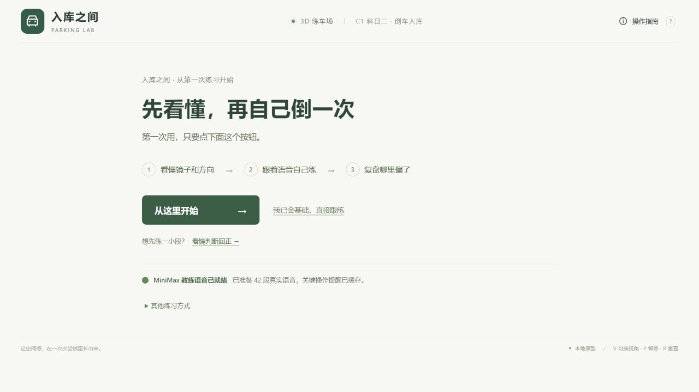
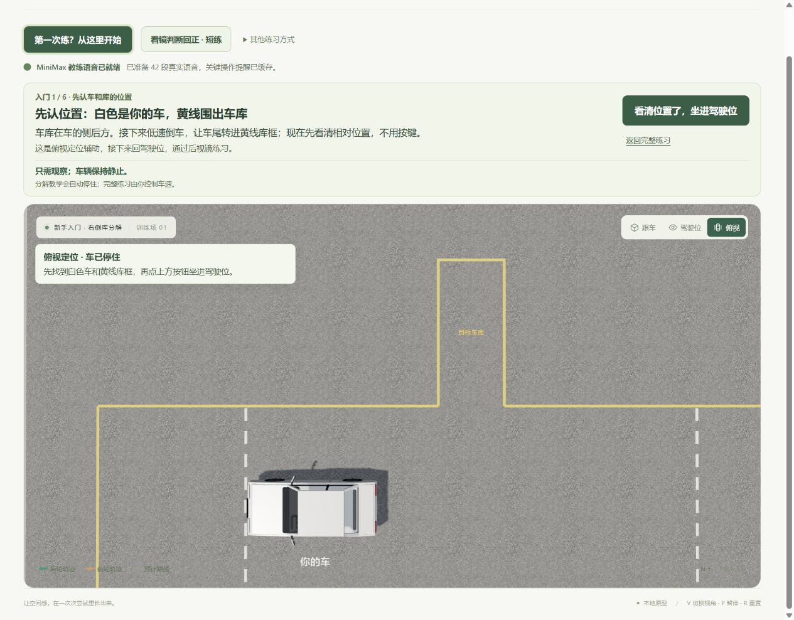
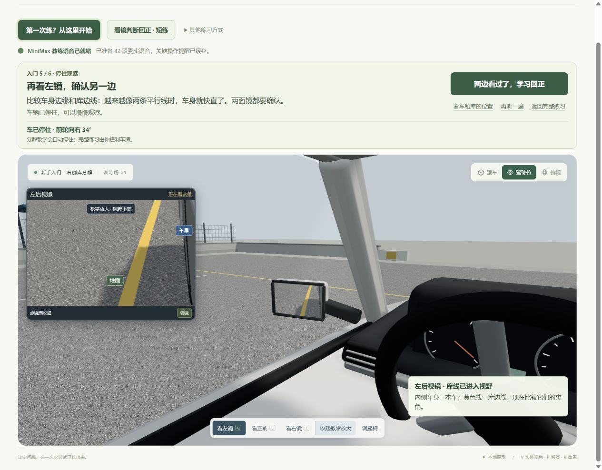
步骤 3—4：短练与镜面对比
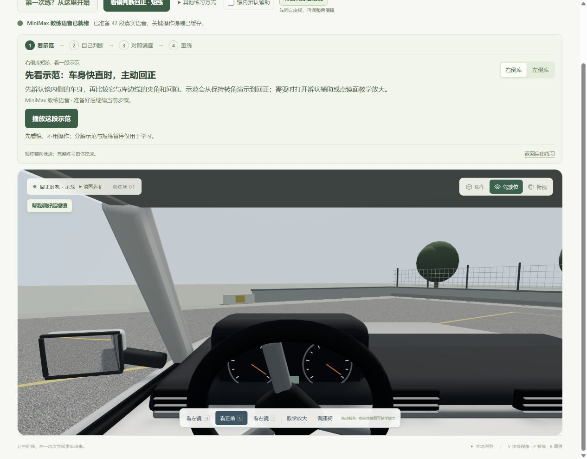
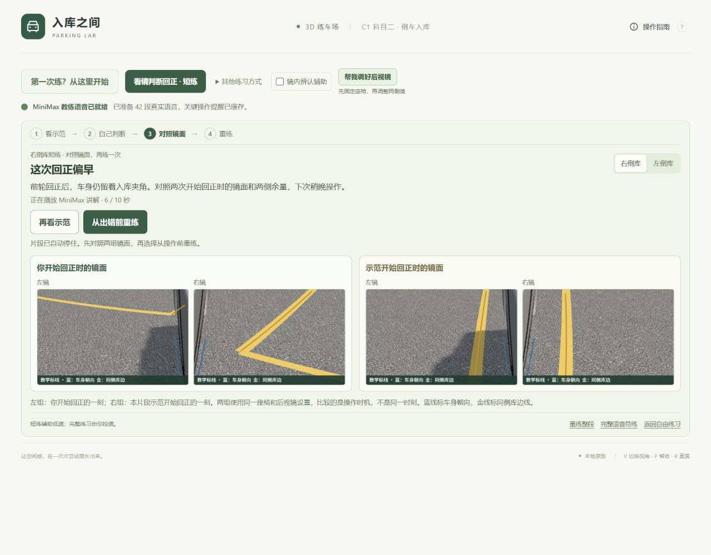
步骤 5—6：完整语音接手、轨迹复盘与座椅推荐
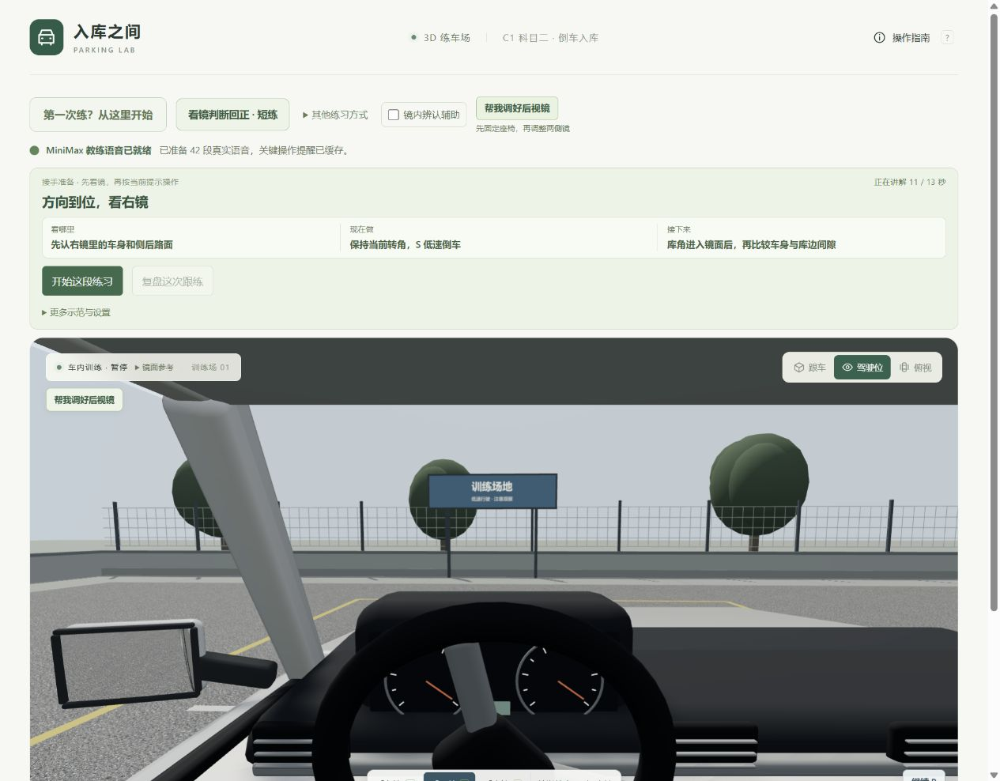
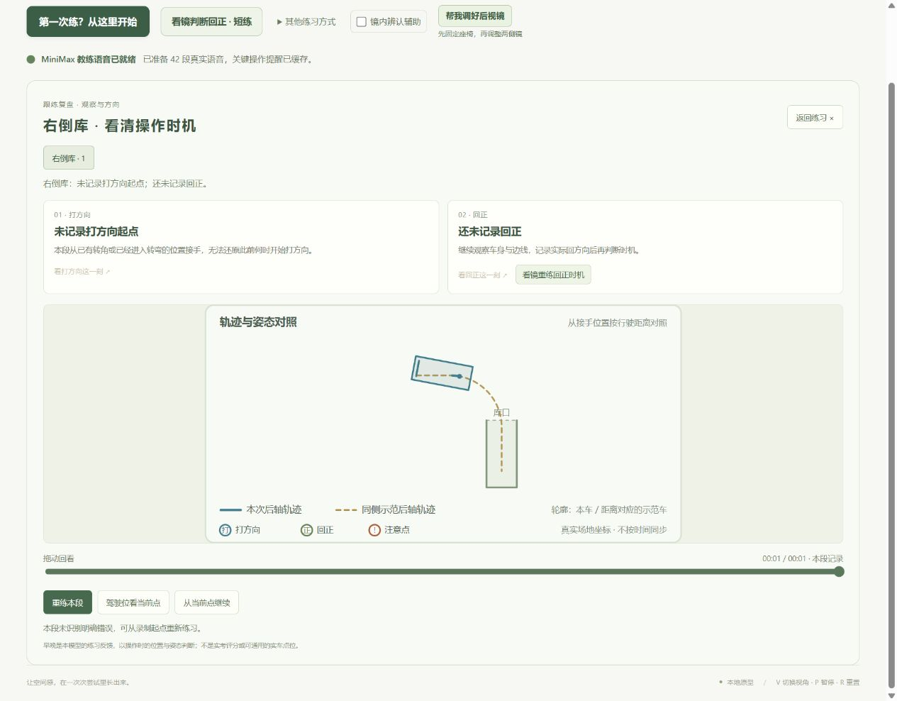
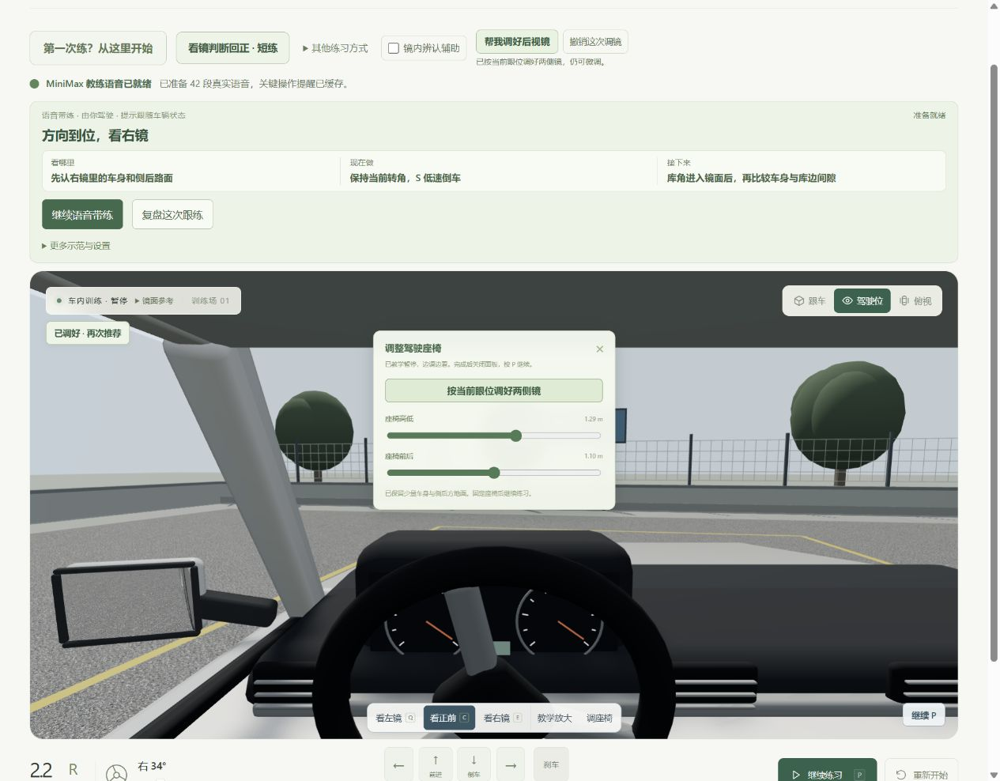
步骤 8：窄屏与场地真实感
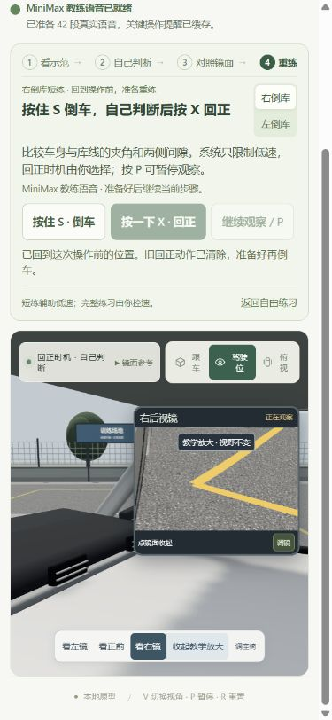
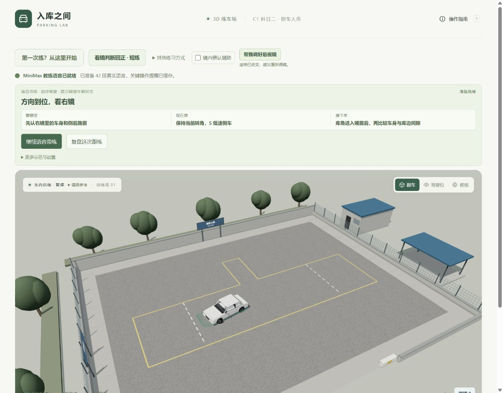
步骤 9：连接恢复
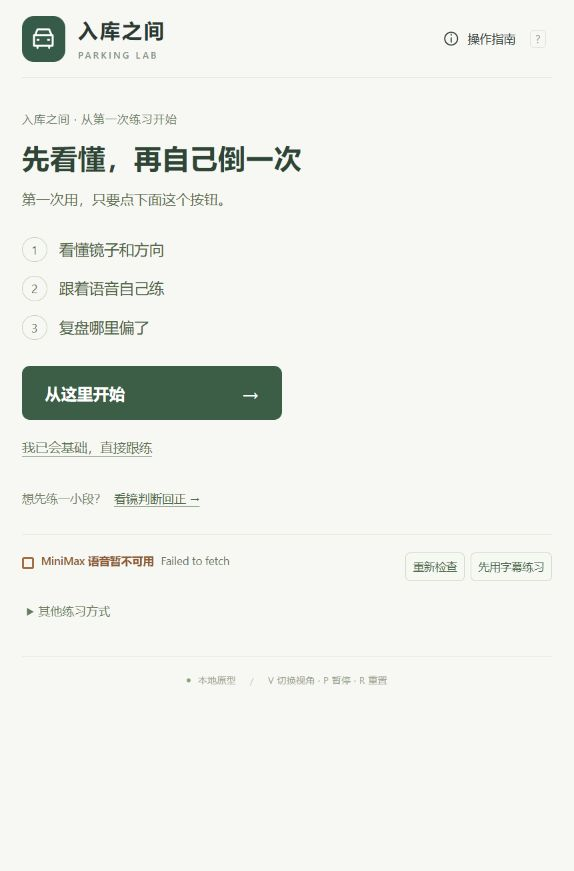
所有图片均为本轮实际页面截图，保留原始视口构图；没有生成替代验收图片。报告与复现代码只写入 notes/full-audit-20261024，不更改练习应用源码。